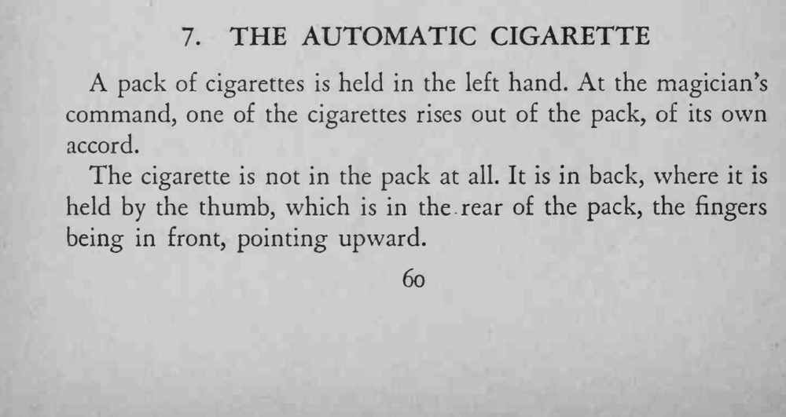
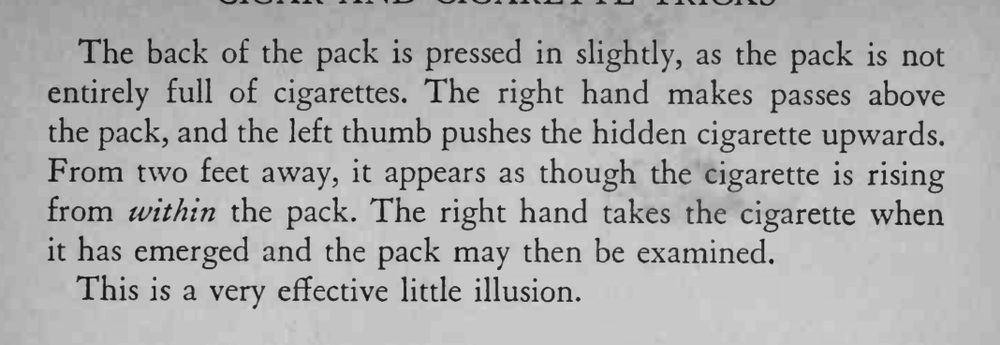

魔术师对着左手的烟包下令，一支香烟竟自己从烟包里升了起来，可那支烟根本不在包里。
烟包背面要微微内压，拇指推烟的速度要均匀，别一截一截地跳。


A pack of cigarettes is held in the left hand. At the magician's command, one of the cigarettes rises out of the pack, of its own accord. The cigarette is not in the pack at all. It is in back, where it is held by the thumb, which is in the rear of the pack, the fingers being in front, pointing upward. The back of the pack is pressed in slightly, as the pack is not entirely full of cigarettes. The right hand makes passes above the pack, and the left thumb pushes the hidden cigarette upwards. From two feet away, it appears as though the cigarette is rising from within the pack. The right hand takes the cigarette when it has emerged and the pack may then be examined. This is a very effective little illusion.